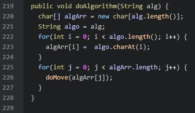

Projects
Rubik's Cube Simulator
The Rubik's Cube project was one of the highlights of my sophomore year. The purpose was to create a virtual representation of the cube, in order to run specific algorithmic tests on it, checking for move cycle counts. This project was completed in Java, and featured object oriented programming, basic control loops for inputs, an output display and diagnostics.
Natural Language Processing
This was a team project completed at a hackathon during my time at Principal Financial. The goal of the project was to automate the scanning process of real estate memorandums to collect information, saving human effort. I worked on the back-end of the project, using a mix of Python, AWS Lambda, and Amazon Comprehend to develop the scanning function. The final product consisted of a dynamic map developed by other members of the team, which interfaced with our database built to store the scanned information collected by the Natural Language Processing system.
Priority Queue Based Web Crawler
I was tasked, along with a partner, to develop a web crawler with a priority queue, with the purpose of finding the most relevant links on a given Wikipedia page. I developed the priority queue and "tuple" objects, which were to be used as generic containers for each link to be placed in. Each link was given a priority value based on certain features, and the priority queue used time efficient algorithms to place and reorder the queue, based on those features' priorities. The result was an algorithm that could accurately crawl through a webpage, locate relevant Wikipedia links, and return them to the user in file form.